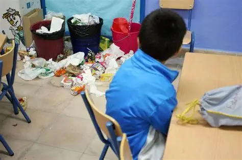
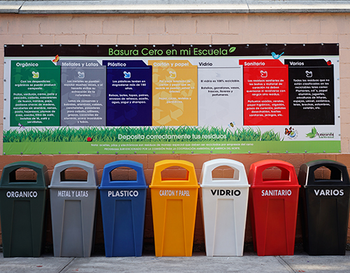

En nuestra escuela se generan varios tipos de residuos, entre ellos estan los organicos que son los restos de comida , las càscaras de fruta y verdura, las hojas y el pasto de jardin, ya que vienen de la preparaciòn de alimentos como los restos de comida.
Otro problema es la generación de los residuos no recilcables que no se pueden reutilizar, además en las escuelas se generan residuos como aluminio y plastico de las comidas, en alcumas escuelas inclusive no hay suficientes lugares para poder poner la basura correspondientes.
Por otro lado, la falta de educación ambiental contribueye a los problemas de gestión de residuos, con esto se puede mejorar la conciencia y el comportamiento de los ciudadanos respecto a la gestión adecuada de los residuos, todos estos problemas pueden ser abordados en las escuelas.
En las escuelas se les invita cordialmente a participar en programas de educación ambiental y a adoptar prácticas de reciclaje y reducción de residuos.

En nuestra escuela, la basura se acumula principalmente en los patios, salones, pasillos, cooperativa y áreas verdes, ya que son lugares donde los estudiantes pasan gran parte del tiempo y consumen alimentos y bebidas, en estos espacios es común encontrar envolturas de dulces, bolsas de plástico, botellas, vasos desechables, servilletas y restos de comida
También suele acumularse basura cerca de los botes cuando están llenos o cuando los alumnos no depositan correctamente sus residuos, otro lugar donde se pueden encontrar muchos desperdicios es alrededor de la cooperativa escolar, debido a la venta y consumo de alimentos, esta acumulación de basura provoca suciedad, malos olores y atrae insectos, por lo que es importante mantener limpias todas las áreas de la escuela y depositar los residuos en los lugares correspondientes
Otro lugar donde se puede encontrar basura es cerca de los contenedores, especialmente cuando están llenos o cuando los alumnos no depositan correctamente sus residuos, además, en los salones suelen acumularse hojas de papel, envolturas y materiales escolares que ya no se utilizan, si estos residuos no se recogen constantemente, pueden provocar malos olores, atraer insectos y dar una mala imagen a las instalaciones.

Actualmente, en nuestra escuela existen diferentes problemas relacionados con la basura y el cuidado del medio ambiente, algunos de los más comunes son la acumulación de residuos en los patios, salones, pasillos y áreas verdes, ya que algunos estudiantes tiran envolturas, botellas, bolsas de plástico y restos de comida en lugares inadecuados
Otro problema importante es la falta de separación de residuos, ya que muchos alumnos mezclan los desechos orgánicos e inorgánicos, como restos de comida, botellas de plástico, latas, papel y cartón, lo que dificulta que estos materiales puedan reciclarse y aprovecharse nuevamente, también existe un consumo excesivo de productos desechables, como bolsas, vasos, platos y envolturas de plástico, que generan grandes cantidades de basura diariamente
volver arriba